José Cecilio del Valle
Intelectual y político hondureño, reconocido por su participación en el proceso de independencia centroamericana.
Una forma de conocer Honduras y sus atractivos turísticos
Telefono:+504 2220-0020
IDENTIDAD Y TRADICIONES
Honduras es una nación de historia, diversidad cultural y sabores tradicionales. Conoce el legado de sus personajes históricos, la riqueza de sus pueblos originarios y afro hondureños, y los platillos que forman parte de nuestra identidad.
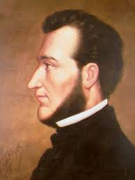
Francisco Morazán, defensor de la unión centroamericana.
NUESTRA HISTORIA
Francisco Morazán fue un político y militar hondureño que defendió la unión de Centroamérica durante el siglo XIX.
>Consideraba que las antiguas provincias centroamericanas podían alcanzar mayor fortaleza, estabilidad y progreso trabajando como una sola nación.
Su pensamiento estuvo relacionado con las ideas liberales la educación, la libertad de prensa y la transformaciónde las instituciones
Su proyecto enfrentó conflictos políticos y la oposición de grupos que defendían la separación de las provincias.
Su legado permanece como símbolo del ideal de integración centroamericana y de la búsqueda de una región más unida
La identidad nacional también se construye a través de las personas que contribuyeron a la independencia y al desarrollo de Honduras.
Intelectual y político hondureño, reconocido por su participación en el proceso de independencia centroamericana.
Primer jefe de Estado de Honduras, vinculado a la organización política del país tras la independencia.
Militar y presidente hondureño que defendió ideales liberales y la unión centroamericana.
DIVERSIDAD CULTURAL
Los pueblos de Honduras conservan conocimientos, expresiones artísticas, lenguas, tradiciones y formas de vida que enriquecen el patrimonio cultural nacional.

Pueblo con fuerte presencia en el occidente y centro-sur de Honduras, reconocido por su tradición artesanal y comunitaria.
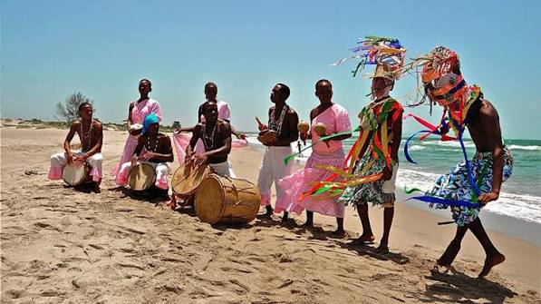
Pueblo afroindígena de la costa caribeña, reconocido por su música, danza, lengua y gastronomía.
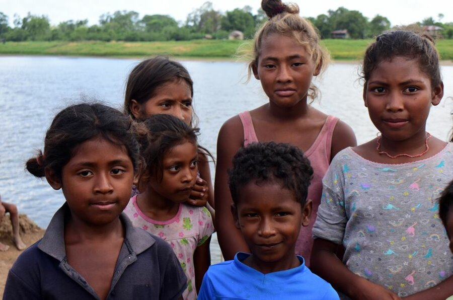
Habitan principalmente la región de La Mosquitia y mantienen una estrecha relación cultural con los ríos, lagunas y el mar.
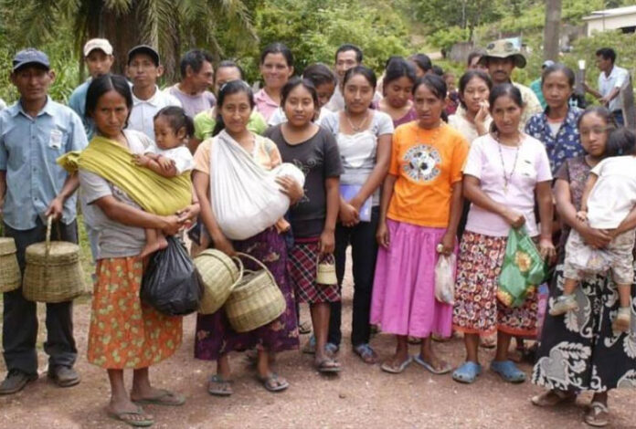
Pueblo indígena presente principalmente en Yoro y en comunidades del norte de Francisco Morazán.
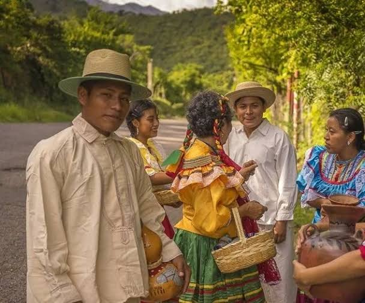
Pueblo de herencia maya con presencia destacada en Copán y Ocotepeque, vinculado a una rica historia cultural.
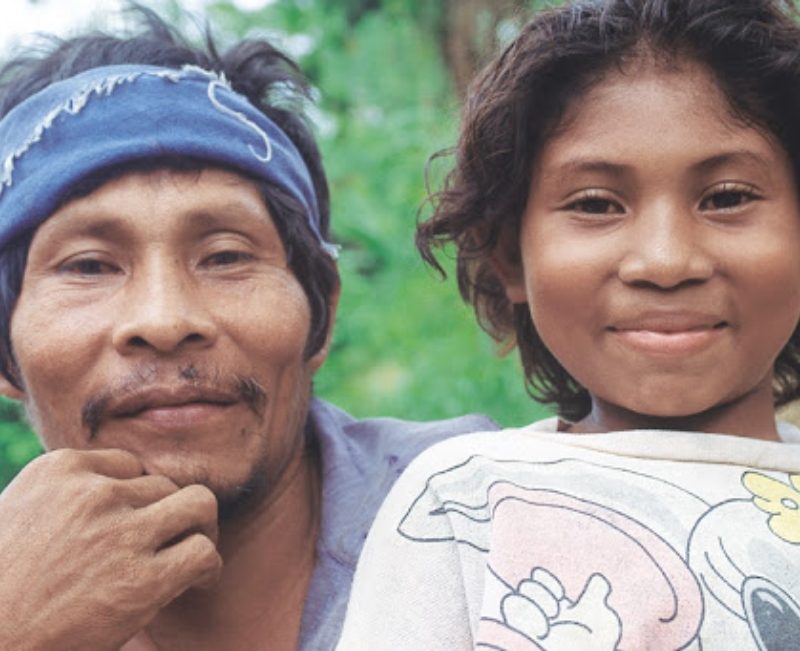
Pueblo indígena de la región nororiental, con comunidades en Olancho, Colón y Gracias a Dios.
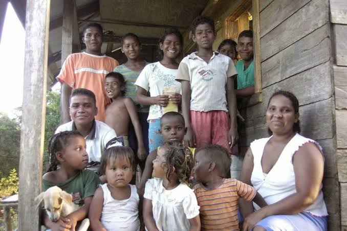
Pueblo indígena que conserva sus tradiciones en comunidades relacionadas con la cuenca del río Patuca.
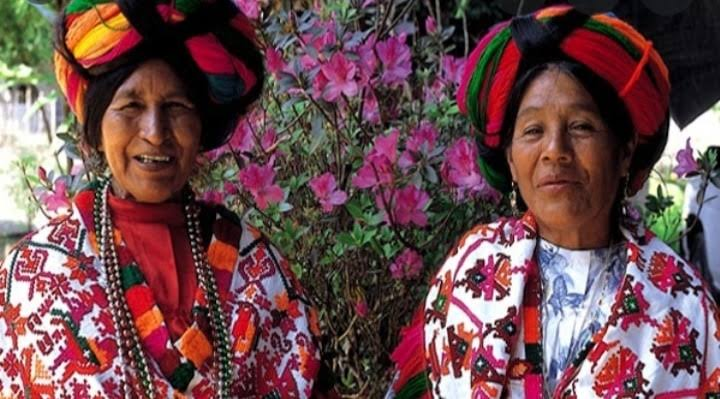
Pueblo originario con presencia en Olancho, que forma parte de la diversidad histórica y cultural hondureña.
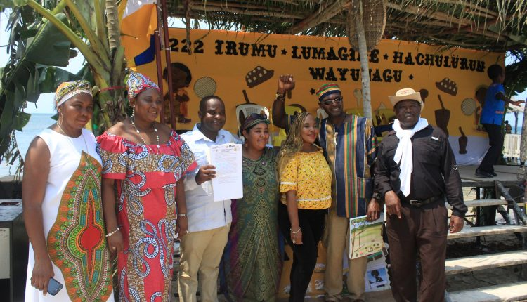
Pueblo afrodescendiente presente especialmente en Islas de la Bahía y en comunidades de la costa norte, con herencia cultural caribeña y lengua creole.
SABORES DE HONDURAS
Recetas heredadas de generación en generación que reflejan los ingredientes, las costumbres y la diversidad de nuestras regiones.

Tortilla de harina de trigo doblada y rellena de frijoles refritos, mantequilla crema y queso rallado. Puede llevar huevo, aguacate o carne.
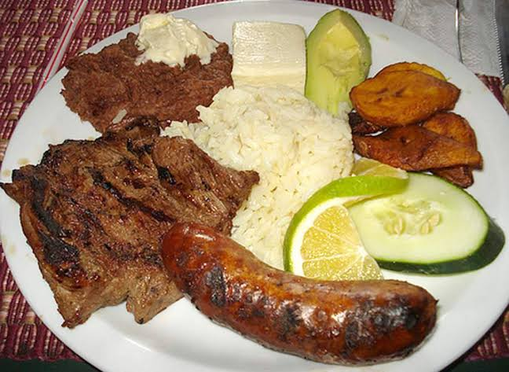
Combinación de carne asada, frijoles, plátano frito, queso, mantequilla crema, chismol y tortillas de maíz.
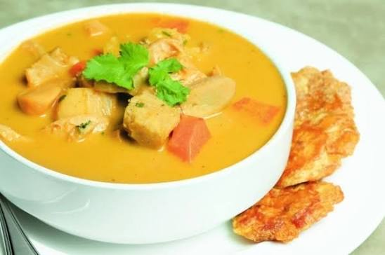
Sopa de caracol marino preparada con leche de coco, yuca, plátano, guineo y especias.
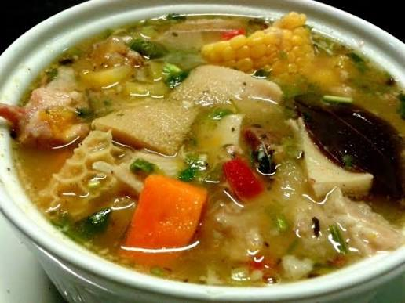
Caldo sustancioso elaborado con tripa y pata de res, verduras, yuca, repollo, elote y plátano.
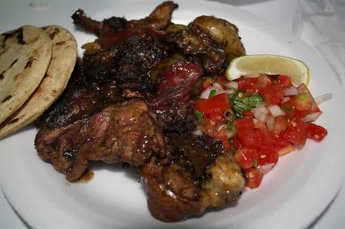
Carne de res sazonada y asada, acompañada de chismol fresco, frijoles y plátano.
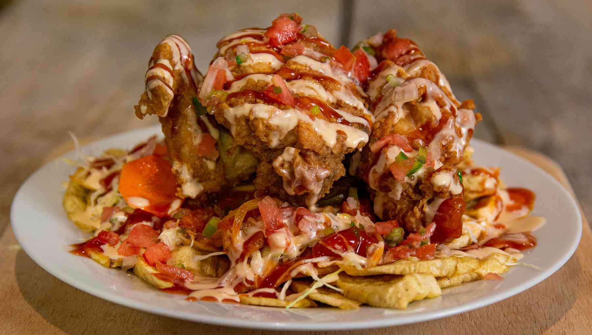
Pollo frito acompañado de tajadas de guineo verde, encurtido, ensalada de repollo y salsa.
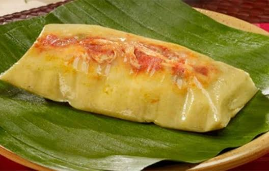
Masa de maíz sazonada y envuelta en hojas, con relleno de carne, arroz, papas y otros ingredientes.
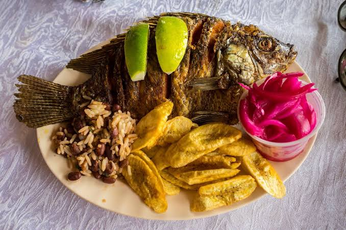
Pescado sazonado y frito, servido habitualmente con tajadas de guineo verde, encurtido y chismol.
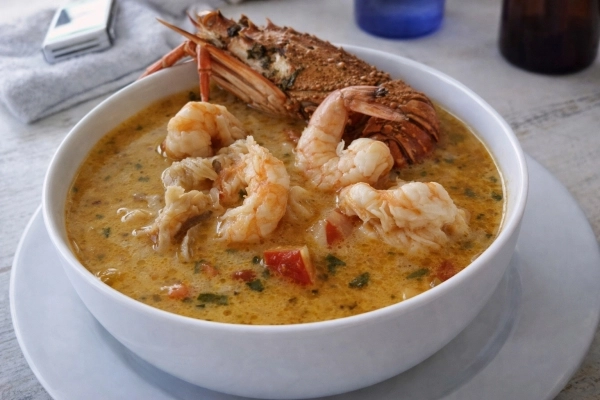
Caldo de mariscos y pescado preparado con leche de coco, verduras y especias.
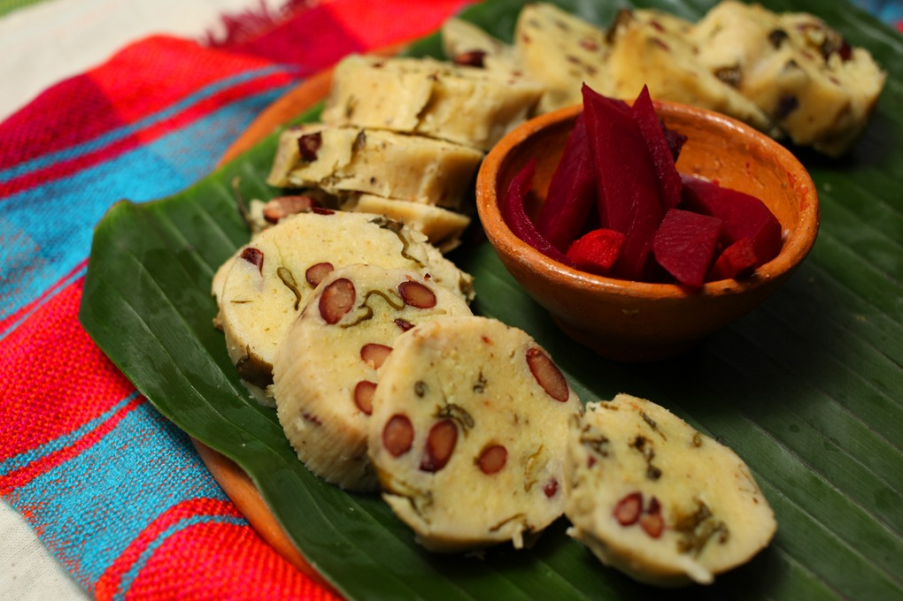
Tamales de masa de maíz mezclada con frijoles y hierbas, tradicionalmente envueltos en tusa.
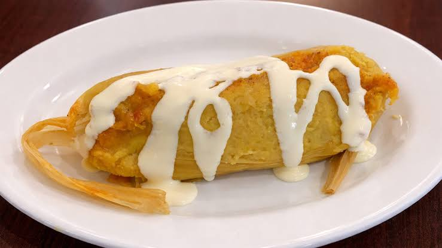
Preparación de maíz tierno con relleno de carne guisada, cocida dentro de la tusa del elote.
Explora nuestros destinos y vive de cerca las tradiciones, la historia y los sabores que hacen único a nuestro país.
Explorar destinos